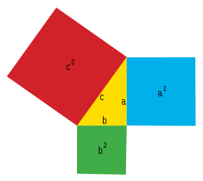
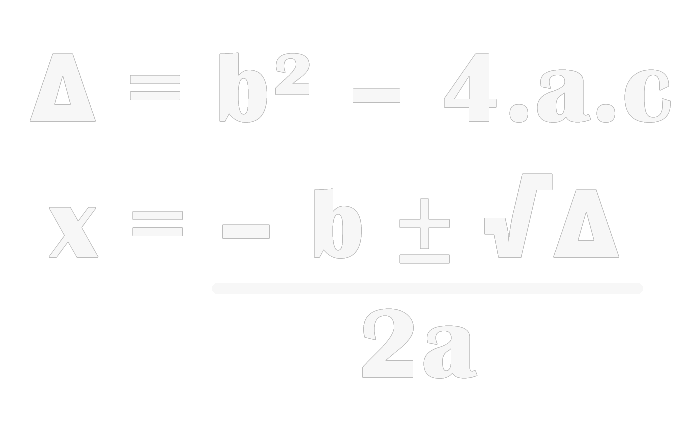
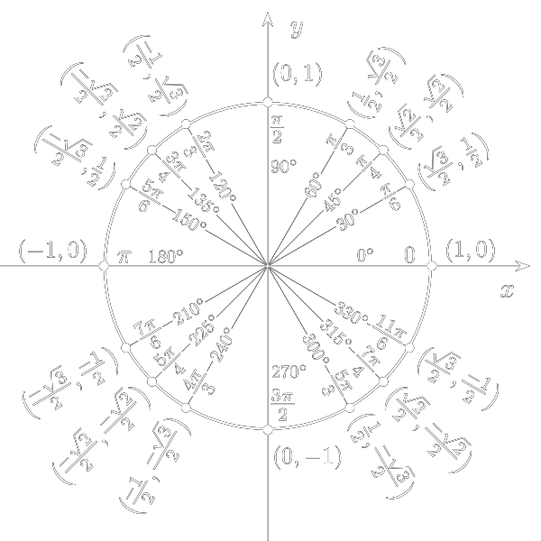
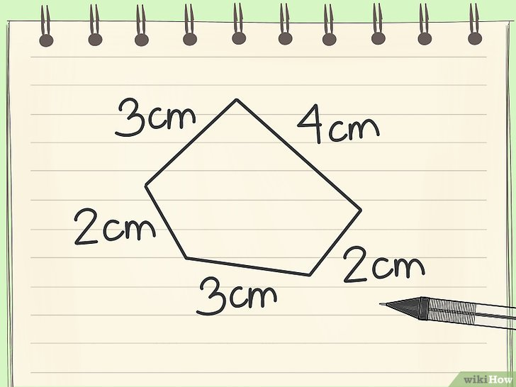

Aqui você encontrará páginas com cálculos diversos para facilitar sua vida! O site foi feito por alunos do segundo ano do curso de Informática. Nosso objetivo é criar fórmulas em JavaScript que facilitem a execução de certos tipos de cálculos. Neste site, existem desde cálculos de áreas de certas figuras geométricas até o cálculo de movimento retilíneo uniforme.
Todos os recursos do site podem ser usados gratuitamente, e os cálculos foram divididos em diferentes páginas.
Áreas |
|
|  |
Área é um conceito matemático que pode ser definido como quantidade de espaço bidimensional, ou seja, de superfície. Existem várias unidades de medida de área, sendo a mais utilizada o metro quadrado (m²) e os seus múltiplos e sub-múltiplos. São também muito usadas as medidas agrárias: are, que equivale a cem metros quadrados; e seu múltiplo hectare, que equivale a dez mil metros quadrados. Outras unidades de medida de área são o acre e o alqueire. Na geografia e cartografia, o termo "área" corresponde à projeção num plano horizontal de uma parte da superfície terrestre. Assim, a superfície de uma montanha poderá ser inclinada, mas a sua área é sempre medida num plano horizontal. |
Fórmula de Bhaskara |
|  |
A fórmula de Bhaskara é um método resolutivo para equações do segundo grau cujo nome homenageia o grande matemático indiano que a demonstrou. Essa fórmula nada mais é do que um método para encontrar as raízes reais de uma equação do segundo grau fazendo uso apenas de seus coeficientes. Vale lembrar que coeficiente é o número que multiplica uma incógnita em uma equação. |
Conversão Graus-Radianos |
|  |
Quando medimos o ângulo de um arco utilizamos como unidade o grau ou o radiano. Temos que 1º (um grau) possui 60’ (sessenta minutos) e 1’ (um minuto) possui 60” (sessenta segundos). Uma circunferência possui 360 arcos de abertura igual a 1º. No caso da medida em radianos, dizemos que o arco mede um radiano (1 rad) se o seu comprimento for igual ao comprimento do raio da circunferência que se encontra o arco medido. |
Cálculo de Perímetros |
|  |
Perímetro é uma medida observada em figuras geométricas planas, isto é, figuras bidimensionais. Ele é definido como a medida do contorno de uma figura geométrica, logo, é uma medida de comprimento. O método usado para obter o perímetro varia de figura para figura, mas a maneira mais óbvia de encontrar esse comprimento é medir com régua, trena, metro ou qualquer outro objeto que possa ser usado para esse tipo de medida. Entretanto, as propriedades das figuras geométricas podem ser usadas para dar mais precisão à medida e acelerar o processo de encontrá-la. |
Cálculo de IMC |

|
IMC significa Índice de Massa Corporal e trata-se de uma medida do peso de cada pessoa, sendo uma relação entre a massa da pessoa e a sua altura. Esta é uma medida de referência internacional reconhecida pela OMS (Organização Mundial da Saúde), mas que não mede diretamente a gordura corporal, porque não contempla a massa magra, massa gorda, líquidos e a estrutura óssea da pessoa em questão. |